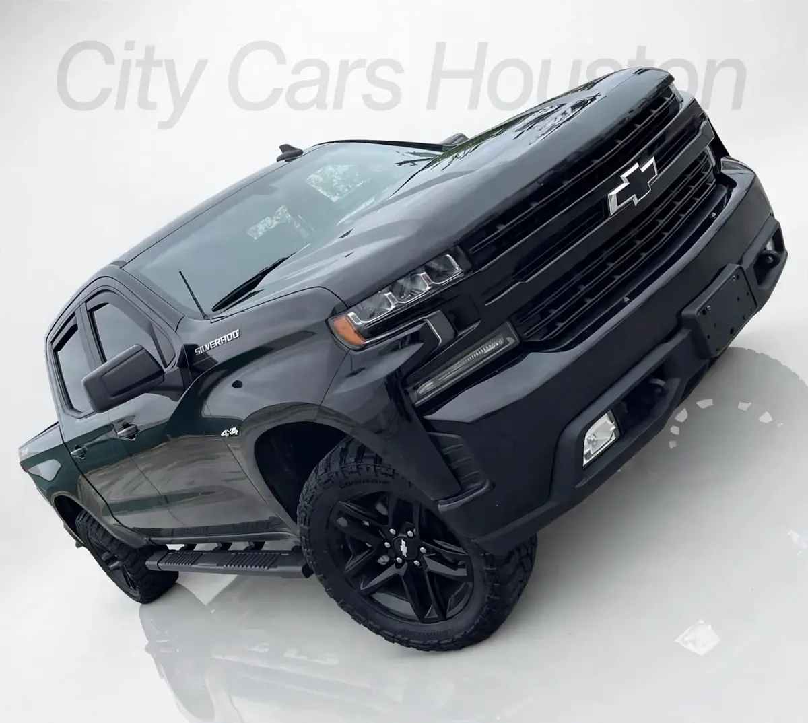

Truck Gray ID CCH-089
2019 Chevrolet Silverado 1500 Trail Boss

1/4- Year
- 2019
- Mileage
- 89,000
- Type
- Truck
Great for
For anyone who needs a truck for work and everyday driving.
Year, mileage and features come from the inventory data; confirm this unit's exact details with the dealer. This sheet shows no prices: the dealer provides them in writing.
General
| Year | 2019 |
|---|---|
| Make | Chevrolet |
| Model | Silverado 1500 Trail Boss |
| Type | Truck |
| Color | Gray |
| Mileage | 89,000 miles |
| Drivetrain | 4x4 |
Model specifications
| Engine | 5.3L V8 (the more common; options: 4.3L V6, 2.7L Turbo, 6.2L V8, 3.0L Duramax diesel) |
|---|---|
| Horsepower | 355 hp (5.3L V8; 285 the 4.3L V6, 310 the 2.7L, 420 the 6.2L, 277 the diesel) |
| Torque | 383 lb-ft (5.3L V8; 305 the 4.3L V6, 348 the 2.7L, 460 the 6.2L and the diesel) |
| Transmission | 6-, 8- or 10-speed automatic depending on engine |
| Model drivetrain | RWD or 4WD (varies depending on unit) |
| Fuel economy (MPG) | City: varies depending on engine: 20 (2.7L), 16-17 (5.3L), 16 (6.2L), 23 (diesel). Highway: varies depending on engine: 23 (2.7L), 21-23 (5.3L), 20 (6.2L), 33 (diesel) |
| Fuel | Gasoline (diesel optional) |
| Max towing | 12200 (max configurado; varies depending on unit) |
| Seats | 3 or 5-6 |
| Body style | Pickup (cab regular, double cab or crew cab) |
Typical figures for this year and model, taken from public sources (manufacturer, KBB, Edmunds). The dealer confirms the exact engine, drivetrain and equipment of this unit.
Visible in the photos / from the listing name
- 4x4